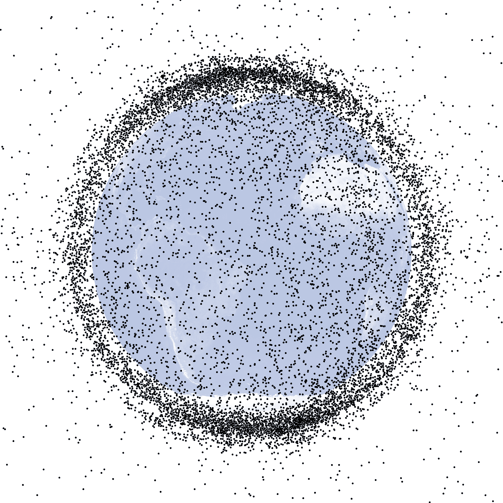
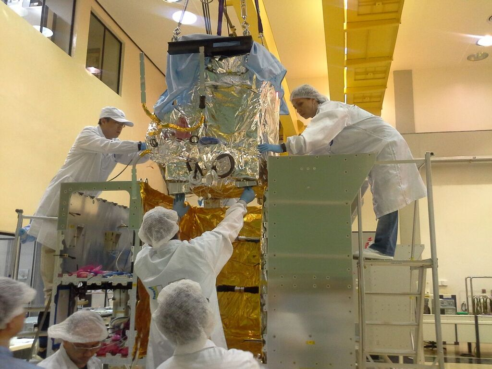

27.000 detritos.
26 satélites brasileiros.
Zero proteção dedicada.
Orbitrace monitora detritos em órbita e calcula risco de colisão para CBERS-4A, Amazonia-1 e SCD-2. Open source, em português, para quem protege o patrimônio espacial brasileiro.

O Brasil não monitora seus próprios satélites
Universidades, AEB e startups espaciais dependem de ferramentas americanas que custam US$ 20.000+/ano por licença. O Orbitrace preenche essa lacuna com dados públicos do Celestrak e Space-Track, código auditável e interface em português.

Como funciona o Orbitrace
Usa o algoritmo SGP4 e dados públicos do Celestrak/Space-Track para calcular risco de conjunção entre detritos e satélites brasileiros. Um console físico com Arduino exibe os alertas em tempo real.


SGP4
Algoritmo padrão NORAD para propagação orbital. Calcula posição futura de qualquer objeto usando dados TLE do Space-Track.
Celestrak
Catálogo público e gratuito de TLEs mantido a partir dos dados do NORAD. Fonte de dados do Orbitrace — sem custos de licença.
Arduino
Console físico de estação terrena com LEDs de semáforo, display OLED e buzzer. Exibe nível de risco BAIXO / MÉDIO / ALTO / CRÍTICO.
Proteger os satélites brasileiros
Foco exclusivo nos ativos espaciais do Brasil, construindo soberania tecnológica nacional sem depender de ferramentas estrangeiras.
CBERS-4A
China-Brazil Earth Resources Satellite
- Órbita polar · 628 km de altitude
- Custo estimado: US$ 250 milhões
- Usado pelo INPE para monitorar desmatamento
AMAZONIA-1
Primeiro satélite 100% brasileiro
- Órbita solar síncrona · 752 km de altitude
- Lançado em 2021 pela AEB
- Projetado e fabricado inteiramente no Brasil
SCD-2
Satélite de Coleta de Dados 2
- Órbita · 750 km de altitude
- Operacional desde 1998
- Coleta dados da Amazônia e do Pantanal
Para quem é o Orbitrace
Desenvolvido para quem trabalha com ativos espaciais brasileiros e precisa de uma solução nacional acessível, auditável e em português.
Por que o Orbitrace?
Alternativa nacional ao STK (US$ 20.000+/ano por licença) usando exclusivamente dados e ferramentas públicas, com código aberto e auditável.
Open Source
Código público e auditável. Qualquer pesquisador pode inspecionar, modificar e contribuir.
Em Português
Interface, documentação e alertas inteiramente em português. Pensado para o usuário brasileiro.
Baixo Custo
Alimentado por dados públicos do Celestrak e Space-Track. Sem licenças, sem custos por seat.
Soberania Espacial
Tecnologia nacional para proteger ativos nacionais. Independência de ferramentas americanas caras.
Como é usado na prática
Três cenários reais de uso do Orbitrace por diferentes perfis de usuário.
Operador da AEB
Acessa o dashboard pela manhã e verifica a lista de alertas de conjunção. Filtra por satélite, prioriza os eventos com risco ALTO ou CRÍTICO e aciona o protocolo de avaliação quando a distância mínima for menor que 1 km.
Gestor Governamental
Recebe relatório mensal de risco por satélite gerado automaticamente. Usa os dados para embasar decisões de investimento em proteção orbital.
Pesquisador Universitário
Exporta o histórico completo de eventos de conjunção em formato CSV. Usa os dados para análise estatística e publicações acadêmicas.
Orbitrace em imagens
Teste seus conhecimentos
10 perguntas sobre detritos espaciais e o programa espacial brasileiro.
Fale com a equipe
Tem interesse no Orbitrace? Preencha o formulário abaixo.